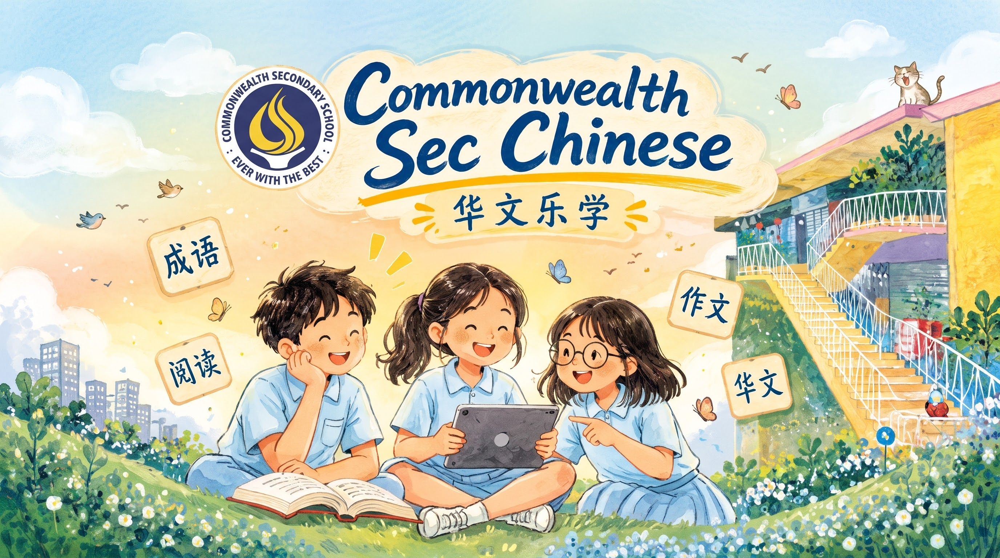

汉字保卫战
六个等级 · 1,200个词语 · 75秒挑战
看中英文提示，找出缺少的汉字！

六个等级 · 1,200个词语 · 75秒挑战
看中英文提示，找出缺少的汉字！
根据词语和中英文提示，点击正确的掉落汉字。
Read the Chinese and English clues, then tap the missing character.
第一次答对：+20分！
答错后可以继续尝试，但本题不再得分。
Only the first tap can earn points. You may keep trying to learn.
时间：75秒 · 难度越高，汉字掉落越快 · 结束后可以复习所有尝试过的词语。